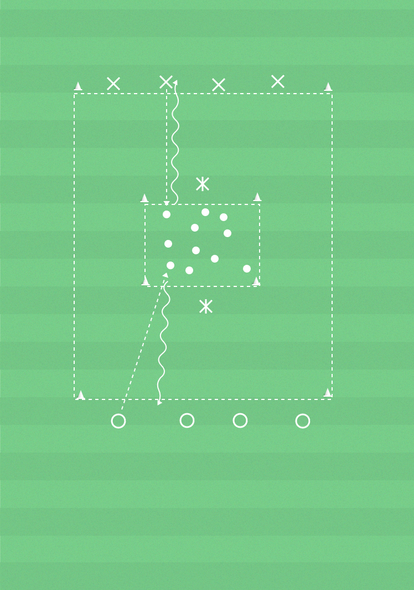

 ▶
▶
Lek
Driva är ett effektivt sätt att transportera bollen framåt i planen.
- Samarbeta i laget genom att tex springa åt olika håll.
- Orientera dig i alla riktingar när du springer eller driver.
- Tempoväxlingar och riktningsförändringar.
Spelare, bollar, yta 15x12 m (ca), konor, västar.
Alla bollar ligger i mitten av ytan, En eller två spelare är katten Tom som vaktar bollarna. De andra spelarna är musen Jerry som har en väst som svans bak i byxan och delas in i två lag.
Det gäller för Jerry att hämta bollarna i mitten och ta de tillbaka bakom sin linje utan att bli tagna av katten Tom. Man blir tagen genom bli av med svansen.
Om man blir tagen får man lämna tillbaka en av lagets bollar till ytan i mitten. Man kan inte bli tagen bakom sin linje eller i ytan där bollarna ligger. Det lag som har flest bollar när bollarna i mitten ytan är slut vinner.
Stegring
Spelarna får inte ta upp bollarna i händerna utan måste driva tillbaka.